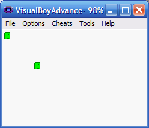
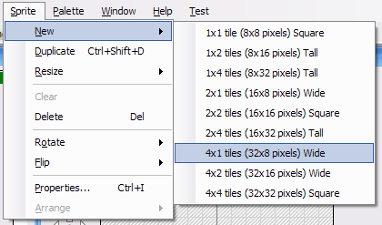

Adding a second object
The default project produced by Spritely doesn't do much, but it is a good starting point for creating your own games. In order to make it interesting, you'll probably want to draw more sprites and (more importantly) modify the source code to make the game do what you want.
This tutorial will show you how to add a second object to your project and show it on the screen.
This tutorial has been tested with devkitARM release 26 and Spritely version 0.19.20 beta and verified to work for both GBA and NDS projects.
Step 1 : Create player sprite
To begin, let's create a simple sprite for the player

Step 2 : Export
Export your project (into c:\gamedev\projects\mygame) and then open up the newly-created .pnproj file to launch Programmer's Notepad.
Step 3 : Find object definitions
Find the following code in game_state.h:
game_state.h — Lines 14 - 16:
// The objects in our game. // Only 128 objects (0-127) can be defined at any time. const int kObj_Player = 0;
The Gameboy (and DS) allows 128 objects on the screen at a time. This code is assigning the player object to object #0.
We could simply use 0 in the code instead of kObj_Player, but as we add more objects we're likely to forget which numbers correspond to which objects. By using a description name like kObj_Player, we're less likely to get confused.
Step 4 : Add definiton for second object
Let's add a definition for a second object. For lack of a clever name, we'll just call this one "New" (kObj_New).
game_state.h — Lines 14 - 17:
// The objects in our game. // Only 128 objects (0-127) can be defined at any time. const int kObj_Player = 0; const int kObj_New = 1;
As with the player object, we'll be using this descriptive name instead of 1 in the code.
Since the GBA allows 128 objects (numbered 0 through 127), we could have chosen any number from 0-127 (well, except for 0 since that's taken by the player object).
Step 5 : Initialize the new object
Now open up game_state.cpp. Scroll down until you find the following lines:
game_state.cpp — Lines 48 - 54:
// Initialize the objects for the first level. InitObject(kObj_Player, 0); // Set the initial location of each object. _xPlayer = 0; _yPlayer = 0; MoveObjectTo(kObj_Player, _xPlayer, _yPlayer);This is the code that places the player object on the screen. If we add a second line like this one, we can create a second object. However, we need to make sure that we don't create our new object on top of our existing object (the player).
Modify the code as follows:
game_state.cpp — Lines 48 - 56:
// Initialize the objects for the first level. InitObject(kObj_Player, 0); InitObject(kObj_New, 0); // Set the initial location of each object. _xPlayer = 0; _yPlayer = 0; MoveObjectTo(kObj_Player, _xPlayer, _yPlayer); MoveObjectTo(kObj_New, 50, 50);
Note that we're giving different information to the second InitObject() call. We're telling it that we're initializing the kObj_New object with sprite #0 and we're placing it at screen location (50,50).
Step 6 : Build/Run
Compile and run your code and you should see a second object near the middle of the screen.

You can't move the object, and if you move your player around you'll go right over it. It also looks exactly the same as the player object. We'll fix the collision problem in a later tutorial, but we can change the new object to use a different sprite right now.
Step 7 : Draw another sprite
To do this, we need to return to Spritely and draw a new sprite. You can create a new sprite by selecting "New" under the "Sprite" menu and selecting the desired size.

For this example, we created a new "4x1 (32x8 pixels) Wide" sprite and drew a simple bat. For your sprite, you can use whatever size you want.
After you've created your new sprite. You now need to give each of your sprites a unique name.
The name of each sprite is shown immediately under the sprite list. By default, sprites are given names like "S1" or "S3". You can rename them by pressing the "Info" button or by selecting the Sprite::Properties... menu item.
Name your player sprite "Player" and name your new object sprite "New". Again, feel free to give your sprites different names, bearing in mind that you'll need to use your new sprite names throughout this tutorial.
Step 8 : Export updated sprites
Now, export your sprites and backgrounds into your project directory.
Do not export a "complete project" or else you will overwrite the code changes that you made earlier.
Step 9 : Verify sprite names
If you now open up sprites.h, you can see how the names that you gave to your sprites are being used in the code.
Scroll down to the bottom of sprites.h. You should see the following code:
sprites.h — Lines 70 - 72:
// Sprite IDs const int kSprites_Player = 0; const int kSprites_New = 1;
Step 10 : Initialize object with different sprites
Now that we've given the sprites names, we can easily update the InitObject() calls to choose different sprites.
Go back to game_state.cpp and look at initialization code:
game_state.cpp — Lines 48 - 50:
// Initialize the objects for the first level. InitObject(kObj_Player, 0); InitObject(kObj_New, 0);
The second parameter of the InitObject() call is the sprite id that is used to create the object. Currently, this is set to 0 for both objects, which means that both objects are using the same sprite (sprite #0, which happens to be the player sprite in our example).
We're going to change this parameter to use a different sprite for each object.
Change this code to the following:
game_state.cpp — Lines 48 - 50:
// Initialize the objects for the first level. InitObject(kObj_Player, kSprites_Player); InitObject(kObj_New, kSprites_New);
Note that the 0 in each line has been changed to use one of the sprite names that we specified earlier: kSprites_Player and kSprite_New.
Compile and run your program and you should see that your new object is now based on the new sprite.
Finished!
You're done.
Links to completed project
GBA:
NDS: